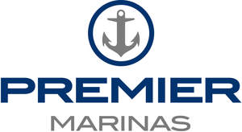

Trade Mark Journal No.2025/018 2 May 2025
UK00004188881 14 April 2025 (35,37,38,39,42,43)
Mark 1

Mark 2
- Class 35
- Advertising; business management; business administration; office functions; provision of business information; business and administrative management of marinas; retail services connected with the sale of yachts, boats and watercraft; retail services connected with the sale of parts and fittings relating to yachts, boats and other watercraft; retail services connected with the sale of clothing, footwear and headgear; Subscriptions (arranging -) to a telematics, telephone or computer service [internet]; consultancy and advisory services in connection with the aforementioned services.
- Class 37
- Construction services; building construction and repair services; building renovation and conversion; property development; maintenance and repair of yachts, boats and other watercraft; maintenance and repair of parts and fittings for yachts, boats and other watercraft; installation of parts and fittings for yachts, boats and other watercraft; cleaning of yachts, boats and other watercraft; refuelling of yachts, boats and other watercraft; consultancy and advisory services in connection with the aforementioned services.
- Class 38
- Telecommunications; broadband services; rental of broadband services; access to computer networks; access to computer networks through wireless technologies; access to the internet; access to the internet through wireless technologies; consultancy and advisory services in connection with the aforementioned services.
- Class 39
- Marina services; berthing, mooring and storage of yachts, boats and other watercraft; lifting, launching and slipping of yachts, boats and other watercraft; rescue, recovery, towing and salvage of yachts, boats and other watercraft; chartering, hire and rental of yachts, boats and other watercraft; transportation of yachts, boats and other watercraft; provision of driving and piloting services; lighterage and porterage services; storage services; warehousing and rental of warehouses; marina operation and management services; the provision of information relating to marinas; transport and travel reservations; travel agency services; consultancy and advisory services in connection with the aforementioned services.
- Class 42
- Engineering; engineering services relating to yachts, boats and other watercraft and their parts; design and development services relating to marinas and associated leisure facilities; consultancy and advisory services in connection with the aforementioned services.
- Class 43
- Provision of food and drink; provision of temporary accommodation; rental of temporary accommodation; restaurant, bar, bistro and café services; preparation of food and drink; provision of food and drink; catering services; canteen services; take away services for the provision of food and drink; consultancy and advisory services in connection with the aforementioned services.
Premier Marinas Limited
Representative: Blake Morgan LLP